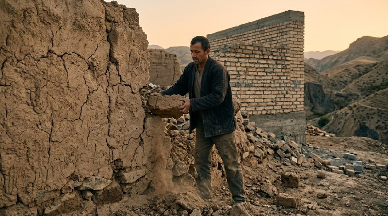

Биз доим янги билим олишга интиламиз. Лекин энг қийини — онгимиздаги эскиларидан воз кечишдир.

Янги ва мустаҳкам иморат қуриш учун аввал эски пахса деворларни бузиб ташлаш керак. Эски пойдевор устига замонавий бино қуриб бўлмайди.
Онгимиз ҳам худди шу майдонга ўхшайди. Кеча ажойиб ишлаган, сизни муваффақиятга олиб чиққан қоидалар бугунги тезкор ўзгаришлар ичида оддий тўсиққа айланади.
Биз кўпинча «менинг тажрибам бор» деб ғурурланамиз. Аммо баъзида бу тажриба — шунчаки ишламай қолган эски одатларнинг йиғиндисидир. Бошқарувда ҳам, оилада ҳам.
Ҳақиқий ўсиш фақат янгиликни қабул қилишда эмас. У ишламай қолган эски қарашларни топиб, улардан мардларча воз кеча олишдадир. Бу жараён янги нарса ўрганишдан кўра кўпроқ ирода талаб қилади.
Бугун ўзингиздан сўранг:
Охирги марта қайси «мутлақо тўғри» деб ишонган фикрингиздан онгли равишда воз кечдингиз?